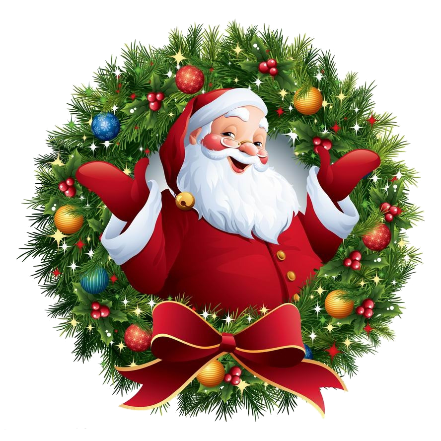

La saison des fêtes s'accompagne traditionnellement de l'achat d'un sapin, symbolisant la célébration et la joie. Cependant, avec les préoccupations croissantes concernant la conservation de la nature, de nombreux consommateurs se tournent vers les sapins synthétiques comme une alternative apparemment plus écologique aux arbres de Noël naturels.
Les sapins synthétiques présentent certains avantages environnementaux évidents : ils peuvent être réutilisés pendant plusieurs années, réduisant ainsi la nécessité de couper de nouveaux arbres chaque saison des fêtes. Cela réduit également la demande de cultures d'arbres spécifiques pour cet usage saisonnier, potentiellement limitant la déforestation.

Cependant, l'aspect écologique des sapins synthétiques est plus complexe qu'il n'y paraît. Ils sont souvent fabriqués à partir de plastique, dérivé du pétrole, ce qui pose des problèmes environnementaux considérables. La production de plastique génère une empreinte carbone significative, et une fois jetés, ces sapins peuvent mettre des centaines d'années à se décomposer dans des décharges.
D'un autre côté, les arbres de Noël naturels sont souvent cultivés dans des fermes spécifiques pour cet usage, contribuant à la préservation des espaces verts et à la séquestration du carbone pendant leur croissance. De plus, de nombreuses municipalités offrent des programmes de recyclage pour les arbres naturels après les fêtes, les transformant en paillis ou en compost pour bénéficier à l'écosystème local.

En fin de compte, le choix entre un sapin synthétique et un arbre de Noël naturel dépend des priorités environnementales individuelles. La durabilité, la réutilisation et la réduction des déchets sont des aspects clés à considérer lorsqu'on cherche à prendre une décision respectueuse de l'environnement pendant la saison des fêtes. Cependant, il est essentiel de reconnaître que les deux options ont des implications environnementales et que chaque consommateur doit peser ces facteurs pour faire un choix qui lui convient le mieux.
La décision entre un sapin synthétique et un arbre de Noël naturel est un compromis entre la réduction de la coupe d'arbres et la réduction de l'utilisation de plastique, et chaque individu doit évaluer attentivement ces compromis pour prendre une décision éclairée en faveur de l'environnement.